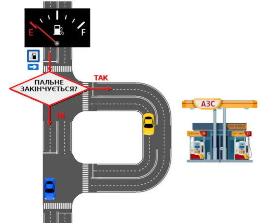
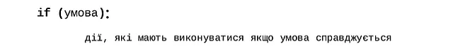
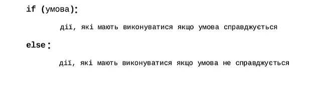
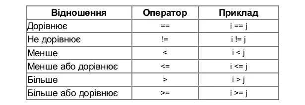

Досі наші програми були схожі на пряму дорогу: комп'ютер слухняно виконував один рядок коду за іншим від початку до кінця. Але в реальному житті так буває рідко — щомиті ми опиняємося на роздоріжжі й приймаємо рішення залежно від обставин: якщо надворі дощ, візьмемо парасольку, інакше — залишаємо її вдома; якщо оцінка учня висока, вчитель його хвалить. Комп'ютерні програми працюють так само: якщо на банківському рахунку достатньо коштів, банкомат видає готівку, інакше — показує помилку; якщо введений пароль правильний, сайт відкриває особисту сторінку користувача. Як бачимо, наші дії залежать від обставин, які ми називатимемо умовами. Ось Ось кілька прикладів:

Зверніть увагу, що кожне речення ми починали зі слова “якщо”, після якого йшло певне висловлювання(умова), за результатом якого має виконуватись дія, яка має бути записана після слова “то”.
Умова (логічний вираз)— висловлювання, на яке можна дати одну відповідь з двох можливих — так або ні.
У програмуванні умова — це вираз, який реалізує порівняння певної змінної з деяким числом або з іншою змінною, результат порівняння може бути істинним(True, умова виконується) чи хибним(False, умова не виконується) .
Умова — вираз, який містить оператори порівняння, які порівнюють дві величини, визначаючи яка з ниx менше, менше або дорівнює, дорівнює, не дорівнює, більше, більше або дорівнює іншій. Умова може бути простою або складеною.
Умовою може бути:
Умови використовуються в умовній вказівці (інструкція розгалуження,if .. else), у вказівці повторення та в інших випадках, про які мова буде далі.
Розгалуження — перехід до іншої послідовності інструкцій, який здійснюється у залежності від виконання певної умови.
Насправді комп’ютери не можуть думати самостійно, і всі їх дії — лише результат сліпого виконання наших вказівок, записаних у програмі.
Умовна вказівка використовує результат перевірки умови для зміни порядку виконання програми, записати умовну вказівку у Python досить просто (особливо якщо знайомий з англійською мовою, але це необов’язково):

Якщо необхідно виконувати певні дії у випадку, коли умова не справджується використовується так звана “повна форма” умовної вказівки:

Основою умови є порівняння, тобто умову ви маєте сформулювати за допомогою порівняння між собою певних величин (змінних та констант), причому результатом такого порівняння має бути відповідь “так” або “ні”.
В умовній вказівці ви можете використовувати будь-який з операторів порівняння:

Для перевірки рівності двох значень, використовуйте наступну вказівку:
if (значення 1 == значення2):
У наведеному нижче прикладі в консолі пишеться “Зараз полудень”, якщо змінна hour має значення 12.
hour = int(input ("Котра година? "))
if hour = 12):
print ("Зараз полудень! ")
Ми можемо перевірити, чи одне значення менше або більше іншого, використовуючи оператори < та >. Перегляньте наступний приклад з введенням різних значень вхідних даних.
hour = int(input ("Котра година? "))
if (hour < 12):
print ("Ще не полудень!")
if (hour > 12):
print("Це вже пізніше полудня!")
Умовні конструкції є невід'ємним елементом будь-якої мови програмування, якщо ми хочемо надати їй трохи складності, оскільки вони дозволяють комп'ютеру приймати рішення. Для цього Python використовує інструкцію if разом із порівнянням, яке ми розглянули в попередньому розділі. Ось приклад:
x = 2
if x == 2:
print("Перевірка істинна!")
🖥 Результат:
Перевірка істинна!
і другий:
x = "банан"
if x == "апельсин":
print("Перевірка істинна!")
Результат виконання: (нічого не виводиться, оскільки умова хибна)
Щодо цих двох прикладів слід зробити кілька зауважень:
print("Перевірка істинна!") виконується, оскільки перевірка істинна. У другому прикладі перевірка хибна, і нічого не виводиться.for та while. Відступ вказує на область дії інструкцій, які потрібно виконати, якщо перевірка істинна.for та while, рядок з інструкцією if закінчується двокрапкою :.Результатом самого порівняння (наприклад, x == 2) є значення булевого типу — True або False (з ним ми вже зустрічалися в Розділі 2 «Змінні» та в підрозділі 5.2 «Порівняння»). Саме це значення й перевіряє інструкція if: якщо воно True — тіло умови виконується, якщо False — Python пропускає його й переходить до наступного рядка коду.
Іноді зручно перевірити відразу кілька варіантів значення в одній інструкції if. Замість кількох окремих інструкцій if можна скористатися конструкцією if / elif / else:
x = 2
if x == 2:
print("Перевірка істинна!")
else:
print("Перевірка хибна!")
x = 3
if x == 2:
print("Перевірка істинна!")
else:
print("Перевірка хибна!")
🖥 Результат:
Перевірка істинна!
Перевірка хибна!
Можна перевіряти й серію значень однієї змінної. Наприклад, випадково оберемо пору року й виведемо відповідне повідомлення. У прикладі використано інструкцію random.choice(spysok), яка повертає випадково обраний елемент зі списку; інструкцію import random ми детальніше розглянемо в Розділі 9 «Модулі», а поки просто приймемо, що вона потрібна:
import random
pora_roku = random.choice(["зима", "весна", "літо", "осінь"])
if pora_roku == "зима":
print("час кататися на лижах")
elif pora_roku == "весна":
print("час висаджувати квіти")
elif pora_roku == "літо":
print("час їхати на море")
elif pora_roku == "осінь":
print("час читати книжки довгими вечорами")
Результат виконання (один із можливих варіантів, оскільки pora_roku обирається випадково):
час їхати на море
У цьому прикладі Python перевіряє першу умову, і лише якщо вона хибна — перевіряє другу, і так далі. Код, що відповідає першій умові, яка виявилася істинною, виконується, і Python одразу виходить із блоку if. Можна також додати гілку else, яка виконається, якщо жодна з умов if та elif не була істинною.
elif має значення. Якщо розташувати менш сувору умову раніше за суворішу (наприклад, перевіряти score >= 4 перед score >= 10), гілка з суворішою умовою може ніколи не виконатися — навіть якщо значення насправді їй відповідає. Докладніше про цю пастку — у підрозділі 6.12 «Типові помилки».
Знову зверніть увагу на відступи! Тут потрібна особлива уважність. Щоб переконатися в цьому, виконайте два приклади коду.
Приклад 1
chysla = [4, 5, 6]
for nb in chysla:
if nb == 5:
print("Перевірка істинна")
print(f"тому що змінна nb дорівнює {nb}")
Результат:
Перевірка істинна
тому що змінна nb дорівнює 5
Приклад 2
chysla = [4, 5, 6]
for nb in chysla:
if nb == 5:
print("Перевірка істинна")
print(f"тому що змінна nb дорівнює {nb}")
Результат:
тому що змінна nb дорівнює 4
Перевірка істинна
тому що змінна nb дорівнює 5
тому що змінна nb дорівнює 6
Обидва коди дуже схожі, але дають зовсім різні результати. Якщо уважно подивитися на відступи останнього рядка, можна побачити, що в Коді 1 інструкція має подвійний відступ — тобто належить до блоку if. У Коді 2 та сама інструкція має лише один відступ, тому вже не належить до блоку if, звідси й виведення повідомлення для кожного значення nb.
Вказівки if і else можуть бути об’єднані, що надає можливість перевірки кількох умов одночасно за допомогою логічних(булевих) операторів. Найчастіше використовують два оператори — АБО та І.
Таблиця істинності оператора АБО:
| Умова 1 | Оператор | Умова 2 | Результат |
|---|---|---|---|
| Істина | АБО | Істина | Істина |
| Істина | АБО | Хибність | Істина |
| Хибність | АБО | Істина | Істина |
| Хибність | АБО | Хибність | Хибність |
Таблиця істинності оператора І:
| Умова 1 | Оператор | Умова 2 | Результат |
|---|---|---|---|
| Істина | І | Істина | Істина |
| Істина | І | Хибність | Хибність |
| Хибність | І | Істина | Хибність |
| Хибність | І | Хибність | Хибність |
У Python для оператора І використовують зарезервоване слово and, а для оператора АБО — or. Обидва пишуться в нижньому регістрі. Приклад:
x = 2
y = 2
if x == 2 and y == 2:
print("перевірка істинна")
🖥 Результат:
перевірка істинна
Той самий результат можна отримати, використавши дві вкладені інструкції if:
x = 2
y = 2
if x == 2:
if y == 2:
print("перевірка істинна")
🖥 Результат:
перевірка істинна
Ми радимо синтаксис з
and— він компактніший. Загалом, чим менше рівнів відступів, тим краще для читабельності.
Ефект цих операторів можна перевірити напряму з True та False (зверніть увагу на регістр):
print(True or False)
🖥 Результат:
True
Нарешті, оператор заперечення not інвертує результат умови:
print(not True)
print(not False)
print(not (True and True))
🖥 Результат:
False
True
False
Порядок виконання and і or. Коли в одному виразі поєднуються і and, і or, Python спочатку обчислює всі and, а вже потім — or (так само, як у математиці множення виконується раніше за додавання). Наприклад:
status = "moderator"
misto = "Київ"
if status == "admin" or status == "moderator" and misto == "Київ":
print("Доступ дозволено")
🖥 Результат:
Доступ дозволено
Тут спершу обчислюється status == "moderator" and misto == "Київ", а вже результат цього виразу порівнюється через or з status == "admin". Якщо потрібен інший порядок обчислення, використовують круглі дужки (), які, як і в математиці, підвищують пріоритет виразу всередині них:
status = "moderator"
misto = "Одеса"
if (status == "admin" or status == "moderator") and misto == "Київ":
print("Доступ дозволено")
else:
print("Доступ заборонено")
🖥 Результат:
Доступ заборонено
У цьому варіанті спершу перевіряється, чи status дорівнює "admin" або "moderator", і лише якщо це так — додатково перевіряється місто. Дужки не змінюють результат самі по собі, але роблять намір коду однозначним і легшим для читання, тож у складених умовах їх варто використовувати навіть тоді, коли типовий пріоритет and/or і так дав би потрібний результат.
Умовну конструкцію if можна вкласти всередину іншої if, так само як ми вкладали цикли for один в одного (підрозділ 5.1.5). Це зручно, коли перевірку другої умови має сенс робити лише за умови, що перша вже виконалась, і при цьому для кожного випадку потрібне власне повідомлення:
vik = 19
ye_kvytok = True
if vik >= 18:
if ye_kvytok:
print("Вхід у кінозал дозволено")
else:
print("Вхід заборонено: у вас немає квитка")
else:
print("Вхід заборонено: фільм тільки для дорослих")
🖥 Результат:
Вхід у кінозал дозволено
Зверніть увагу на відступи: внутрішній if (перевірка ye_kvytok) має власний додатковий рівень відступу порівняно із зовнішнім if (перевірка vik). Завдяки цьому Python розуміє, що наявність квитка перевіряється тільки тоді, коли перша перевірка віку вже виявилася істинною.
Якщо для всіх випадків, коли умова хибна, потрібне те саме повідомлення (як у прикладі з підрозділу 6.4), простіша й читабельніша складена умова з
and—if vik >= 18 and ye_kvytok:. Проте якщо кожна гілка має власне, окреме повідомлення (як тут: «немає квитка» відрізняється від «фільм тільки для дорослих»), вкладеніifє єдиним природним способом це записати.
Умовні конструкції особливо корисні для «захисту» програми від некоректних даних, які може ввести користувач — наприклад, від'ємного віку чи занадто великого числа там, де такі значення не мають сенсу:
vidpovid = input("Введіть ваш вік: ")
vik = int(vidpovid)
if vik < 0 or vik > 120:
print("Помилка! Введено нереальний вік")
else:
print("Вік прийнято. Дякуємо!")
Приклад введення: 200
🖥 Результат:
Помилка! Введено нереальний вік
Тут умова vik < 0 or vik > 120 істинна, якщо введене число виходить за межі правдоподібних значень (менше 0 або більше 120) — саме тому для такої перевірки природно підходить оператор or, а не and: досить, щоб не виконувалась хоча б одна із двох меж, щоб дані вважалися некоректними.
Умовні конструкції особливо часто застосовують разом зі списками, які ми вивчали в Розділі 4 «Списки».
Перевірка наявності елемента за допомогою in. Оператор in дозволяє перевірити, чи міститься значення в списку, повертаючи True або False:
movy = ["Python", "Java", "C++"]
if "Python" in movy:
print("Ми вивчаємо саме цю мову")
🖥 Результат:
Ми вивчаємо саме цю мову
Перевірка порожнього списку. Часто перед початком обробки даних потрібно переконатися, що список узагалі містить елементи. Найпряміший спосіб — порівняти його довжину з нулем:
chysla = []
if len(chysla) == 0:
print("Список порожній! Додайте хоча б одне число")
🖥 Результат:
Список порожній! Додайте хоча б одне число
Порожній список сам по собі є «хибним» значенням для Python, тож на практиці частіше пишуть скорочено
if not chysla:замістьif len(chysla) == 0:. Обидва варіанти рівнозначні; другий (зlen()) інтуїтивніший для початківців, тому саме його ми використовуємо тут.
Якщо потрібно зробити простий вибір між двома значеннями і одразу записати результат у змінну, звичайна конструкція if/else може зайняти кілька рядків. Python пропонує компактний однорядковий запис — тернарний умовний вираз:
chyslo = 4
rezultat = "Парне" if chyslo % 2 == 0 else "Непарне"
print(rezultat)
🖥 Результат:
Парне
Цей рядок можна прочитати майже як звичайну мову: «rezultat дорівнює "Парне", якщо chyslo ділиться на 2 без остачі, інакше — "Непарне"». Загальний синтаксис такий:
значення_якщо_істина if умова else значення_якщо_хибна
Тернарний вираз повністю еквівалентний такому запису через звичайний if/else:
if chyslo % 2 == 0:
rezultat = "Парне"
else:
rezultat = "Непарне"
Тернарний вираз варто використовувати лише для простих одноразових виборів, що вкладаються в один рядок. Якщо логіка складніша (кілька умов, кілька дій у кожній гілці), звичайний
if/elif/elseчитається набагато краще.
break та continueЦі дві інструкції змінюють поведінку циклу (for або while) із перевіркою. Ми вже детально розглядали їх у розділі «Керування виконанням циклів» — тут коротко нагадаємо принцип у поєднанні з if.
Інструкція break зупиняє поточний цикл:
for chyslo in range(4):
if chyslo > 1:
break
print(chyslo)
🖥 Результат:
0
1
Інструкція continue переходить одразу до наступної ітерації, не виконуючи решту блоку інструкцій циклу:
for chyslo in range(4):
if chyslo == 2:
continue
print(chyslo)
🖥 Результат:
0
1
3
floatКоли потрібно перевірити значення змінної типу float, першим рефлексом буде використати оператор рівності, наприклад:
print(1 / 10 == 0.1)
🖥 Результат:
True
Однак так робити категорично не варто. Python зберігає значення float у вигляді чисел з рухомою комою (звідси й назва), а це має певні обмеження[^1]. Розглянемо приклад:
print((3 - 2.7) == 0.3)
print(3 - 2.7)
🖥 Результат:
False
0.2999999999999998
Результат операції 3 - 2.7 не є точно 0.3, тому в другому рядку ми отримуємо False. Ця проблема стосується не Python, а того, як комп'ютери загалом обробляють числа з рухомою комою (як відношення двійкових чисел). Тож деякі значення float можуть бути лише наближеними. Переконатися в цьому можна, попросивши вивести більше десяткових знаків:
print(0.3)
print(f"{0.3:.5f}")
print(f"{0.3:.60f}")
zminna = 3 - 2.7
print(f"{zminna:.60f}")
print(abs(zminna - 0.3))
🖥 Результат:
0.3
0.30000
0.299999999999999988897769753748434595763683319091796875000000
0.299999999999999822364316059974953532218933105468750000000000
1.6653345369377348e-16
Коли ми вводимо 0.3, Python показує округлене значення — насправді число 0.3 можна закодувати як число з рухомою комою лише наближено. Це важливо пам'ятати, порівнюючи два float: навіть якщо 0.3 і 3 - 2.7 дають не зовсім однаковий результат, різниця нескінченно мала — порядку 1e-16, тобто на рівні 16-го знака після коми! Тому оператор == не можна використовувати для перевірки float на рівність конкретному значенню, адже він перевіряє строгу рівність. Правильний підхід — перевірити, чи потрапляє float у певний інтервал із заданою точністю. Назвемо цю точність delta:
delta = 1e-5
zminna = 3.0 - 2.7
print(0.3 - delta < zminna < 0.3 + delta)
print(abs(zminna - 0.3) < delta)
🖥 Результат:
True
True
Тут ми перевіряємо, чи zminna потрапляє в інтервал 0.3 ± delta. Обравши delta = 1e-5, ми звіряємо число з точністю до п'ятого знака після коми. Обидва підходи еквівалентні:
abs() і є більш компактним.Ще один спосіб порівняння float, доступний починаючи з Python 3.5, — функція math.isclose():
import math
zminna = 3.0 - 2.7
print(math.isclose(zminna, 0.3, abs_tol=1e-5))
🖥 Результат:
True
Ця функція приймає два float для порівняння та іменований аргумент abs_tol, що відповідає бажаній точності (яку вище ми назвали delta). Радимо завжди вказувати abs_tol явно. Інструкцію import math ми детальніше розглянемо в Розділі 9 «Модулі», а поки просто приймемо, що вона потрібна.
З трьох способів порівняння
floatрадимоmath.isclose()— на нашу думку, найбільш читабельний варіант.
Так само як цикли мають свої типові схеми (підрозділ 5.5), умовні конструкції теж лежать в основі кількох класичних задач, які варто впізнавати.
Пошук більшого з двох чисел.
a = 15
b = 22
if a > b:
maksymum = a
else:
maksymum = b
print("Максимум:", maksymum)
🖥 Результат:
Максимум: 22
Визначення максимуму серед трьох (і більше) чисел. Той самий принцип, що й пошук максимуму в списку (підрозділ 5.5.3): «переможець» ініціалізується першим значенням, а потім послідовно порівнюється з рештою:
x = 10
y = 45
z = 12
max_chyslo = x
if y > max_chyslo:
max_chyslo = y
if z > max_chyslo:
max_chyslo = z
print("Найбільше число з трьох:", max_chyslo)
🖥 Результат:
Найбільше число з трьох: 45
Перевірка парності числа. Використовує оператор остачі %, з яким ми вже зустрічалися: число парне тоді й лише тоді, коли остача від його ділення на 2 дорівнює нулю.
chyslo = 8
if chyslo % 2 == 0:
print("Число парне")
else:
print("Число непарне")
🖥 Результат:
Число парне
Перевірка належності діапазону. У Python можна записувати подвійні нерівності майже так само, як у математиці:
x = 5
if 1 <= x <= 10:
print("Число знаходиться в межах від 1 до 10")
🖥 Результат:
Число знаходиться в межах від 1 до 10
Це коротший еквівалент запису if x >= 1 and x <= 10:.
Як і з циклами (підрозділ 5.6), у роботі з умовними конструкціями є кілька помилок, що трапляються найчастіше.
if, elif або else — Python одразу поверне SyntaxError.IndentationError, або (що небезпечніше) мовчки виконається завжди, незалежно від умови (див. приклад із подвійним і одинарним відступом у підрозділі 6.3).elif — якщо розмістити менш сувору умову раніше за суворішу (наприклад, if score >= 4: перед elif score >= 10:), гілка із суворішою умовою стає недосяжною: щойно значення потрапляє під першу істинну умову, Python виконує саме її й далі гілки не перевіряє. Правило: спочатку пишіть найсуворіші (найвищі або найточніші) умови, а вже потім — простіші.= та == — оператор присвоювання = і оператор порівняння == виконують абсолютно різні дії; спроба написати if x = 5: замість if x == 5: призведе до помилки синтаксису.Складіть список tyzhden із назвами семи днів тижня. За допомогою циклу виведіть кожен день тижня разом із повідомленням:
Ці повідомлення — лише орієнтир, можете придумати власні.
Функція min() у Python повертає найменший елемент списку, що складається з чисел або рядків. Не використовуючи функцію min(), створіть скрипт, який визначає найменший елемент списку [8, 4, 6, 1, 5].
Наведений нижче список представляє результати опитування «Який фрукт ти обираєш найчастіше?»:
["яблуко", "банан", "яблуко", "апельсин", "банан", "банан", "яблуко", "груша"]
Обчисліть, скільки разів у цьому списку зустрічається кожен варіант: «яблуко», «банан», «апельсин» та «груша».
Є список оцінок учня: 11, 9, 7, 8 та 12. Створіть скрипт, який виводить максимальну оцінку (за допомогою max()), мінімальну оцінку (за допомогою min()) і обчислює середнє значення. Виведіть середній бал із двома десятковими знаками, а також підсумкову відмітку, знаючи, що вона «задовільно» — якщо середній бал від 4 включно до 6 виключно, «добре» — від 7 включно до 9 виключно, і «відмінно» — понад 9.
Напишіть програму-калькулятор, яка приймає від користувача два числа, а потім запитує математичну дію (+, -, * або /) через input(). Залежно від вибору (використайте if/elif/else), виведіть результат відповідної операції. Якщо користувач обрав ділення /, обов'язково перевірте за допомогою if, що друге число не дорівнює нулю, перш ніж виконувати ділення.
Створіть програму, яка запитує логін і пароль користувача через input(). Якщо логін дорівнює "admin", а пароль — "super_secret123", виведіть повідомлення про успішний вхід. У будь-якому іншому випадку виведіть повідомлення про помилку доступу.
Напишіть скрипт, який визначає вартість квитка до кінотеатру залежно від віку відвідувача (запитаного через input()):
Передбачте також перевірку некоректно введеного віку (наприклад, від'ємного значення).
Гіпотеза Колаца (також відома як «гіпотеза 3n+1» або «гіпотеза Сіракузи») — це математична гіпотеза, яка й досі залишається недоведеною. Формулюється вона так. Нехай n — додатне ціле число. Якщо n парне, ділимо його на 2. Якщо непарне — множимо на 3 і додаємо 1. Повторюючи цю процедуру, послідовність чисел рано чи пізно досягає значення 1, а потім нескінченно повторює три значення — так званий тривіальний цикл. Досі гіпотезу про те, що з будь-якого додатного цілого числа послідовність завжди досягає 1, не було спростовано. Наприклад, перші елементи послідовності, якщо почати з 10: 10, 5, 16, 8, 4, 2, 1...
Створіть скрипт, який, починаючи з додатного цілого числа n (наприклад, 10 або 20), будує список чисел цієї послідовності. Чи гіпотеза підтверджується для різних початкових значень n? Які числа утворюють тривіальний цикл?
Уявімо конвеєр, на якому виготовляють деталі. Ідеальні розміри деталі — довжина 50.0 мм та ширина 20.0 мм, а допустиме відхилення становить ±2 мм за кожним виміром. Нижче наведено список замірів для 15 деталей (кожен елемент — пара [довжина, ширина]):
[[50.1, 19.8], [52.3, 21.1], [49.7, 20.3],
[55.0, 25.0], [50.5, 20.5], [48.9, 19.6],
[51.2, 20.9], [60.0, 15.0], [49.4, 20.1],
[50.8, 19.4], [51.5, 20.6], [49.9, 20.0],
[50.3, 19.9], [52.8, 21.5], [48.6, 20.2]]
Для першої деталі довжина дорівнює 50.1, а ширина — 19.8. Для другої довжина — 52.3, ширина — 21.1 і так далі. Використовуючи цей список, створіть скрипт, який для кожної деталі перевіряє, чи потрапляють обидва виміри в допустимий діапазон, і виводить самі виміри та повідомлення «відповідає стандарту» або «не відповідає стандарту». Наприклад, для перших трьох деталей:
[50.1, 19.8] відповідає стандарту
[52.3, 21.1] не відповідає стандарту
[49.7, 20.3] відповідає стандарту
Скільки деталей із 15 відповідають стандарту?
Пошук поділом навпіл — метод, що полягає в послідовному діленні (як правило, навпіл) простору пошуку для знаходження рішення. Ось приклад розмови між Петром і Павлом, де Петро намагається вгадати число (від 1 до 100 включно), яке задумав Павло:
Хитрість швидкого вгадування — щоразу брати половину інтервалу, у якому міститься число. Ось покроково:
Створіть скрипт, який відтворює цю гру у вгадування: ви задумуєте число від 1 до 100, а комп'ютер намагається вгадати його методом поділу навпіл, ставлячи запитання через функцію input().
Орієнтовний результат роботи програми для наведеної вище розмови:
Задумайте число від 1 до 100.
Ваше число більше, менше чи дорівнює 50? [+/-/=] +
Ваше число більше, менше чи дорівнює 75? [+/-/=] +
Ваше число більше, менше чи дорівнює 87? [+/-/=] -
Ваше число більше, менше чи дорівнює 81? [+/-/=] -
Ваше число більше, менше чи дорівнює 78? [+/-/=] +
Ваше число більше, менше чи дорівнює 79? [+/-/=] =
Я вгадав за 6 запитань!
Символи [+/-/=] показують, як відповідати: +, якщо задумане число більше за запропоноване комп'ютером, -, якщо менше, і =, якщо дорівнює (після кожної відповіді натисніть Enter).
Python Docs — More Control Flow Tools (if, elif, else)
https://docs.python.org/3/tutorial/controlflow.html
Python Docs — Truth Value Testing
https://docs.python.org/3/library/stdtypes.html#truth-value-testing
Python Docs — Boolean Operations (and, or, not)
https://docs.python.org/3/library/stdtypes.html#boolean-operations-and-or-not
Python Docs — Comparisons
https://docs.python.org/3/library/stdtypes.html#comparisons
Real Python — Conditional Statements (if/else)
https://realpython.com/python-conditional-statements/
Programiz — Python if...else
https://www.programiz.com/python-programming/if-elif-else
GeeksforGeeks — Decision Making in Python (if, elif, else)
https://www.geeksforgeeks.org/decision-making-python-if-elif-else-nested-if-switch-case/
W3Schools — Python Conditions and If Statements
https://www.w3schools.com/python/python_conditions.asp